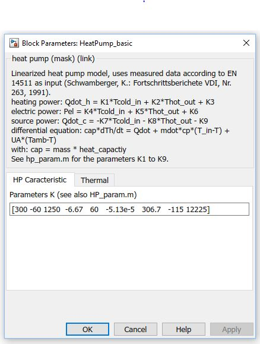
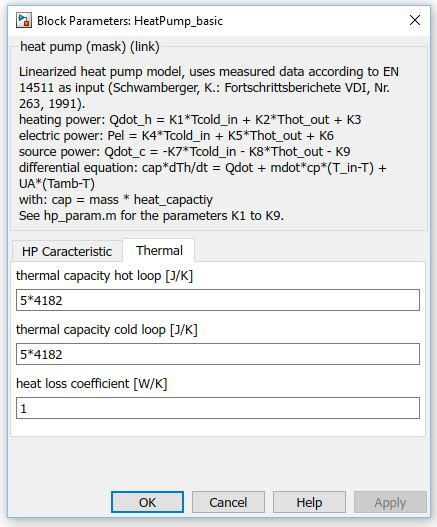

HeatPump_basic
Path: CARNOT/Basic/Thermal_Models
Purpose:
Linear model for the calculation of a heat pump.
Description:
Pragraph Block description
Description
The dynamic behaviour of the heat pump is calculated using an empirical model
of Schwamberger [Schwamberger, 1991]. The base is the static characteristics
of the heat pump according to the Allen-Hamilton model [Allen, Hamilton 1983].
In the two-dimensional diagram the heating, source and electric powers are
given for different temperatures in the primary and secondary cycles. The
characteristics are approximated by linear equations:
heating_power = Ctrl * (K1 * Tprimary,in
+ K2 * Tsecondary,out + K3)
electric_power = Ctrl * (K4 * Tprimary,in
+ K5 * Tsecondary,out + K6)
source_power = Ctrl * (-K7 * Tprimary,in
- K8 * Tsecondary,out - K9)
The outlet temperatures of the hot (h) and cold (c) branches are calculated by the
differential equations:
caph * dTh/dt = Qdotheating
+ mdot * cp * (Tin,h-T) + UA * (Tamb-Th)
capc * dTc/dt = Qdotsource
+ mdot * cp * (Tin,c-T) + UA * (Tamb-Tc)
with:
cap = mass * heat_capactiy
As the thermal losses of the heat pump are already taken into account by the
test bench data (EN 14511, EN 14825), the thermal losses UA * (Tamb-T)
are only calculated during standby (Ctrl = 0).
The parameters K1..K9
can be determined from the measurement data by the M-file
hp_param:
K = hp_param(A)
on the command line. For more information type
help hp_param
Input:
| THBin_source | : | entering Thermo Hydraulic Bus of the source (cold side) |
| THBin_load | : | entering Thermo Hydraulic Bus of the load (heating side, return line) |
| Tamb | : | ambient temperature of the heat pump (for thermal losses during standby) in °C |
| Ctrl | : | control signal of the heat pump in [0..1] |
Output:
| THBsource | : | leaving Thermo Hydraulic Bus of the source (cold side) |
| THBload | : | leaving Thermo Hydraulic Bus of the load (heating side, flow line) |
| HPdat | : | heat pump data bus, can be connected to a Logger_HeatPump |
Heat Pump Data Bus (HPdat):
Parameters and Dialog Box:


Examples:
Open the example explorer from the Matlab command window
ExampleBrowser
or load the examples via the CARNOT library.
Literature:
Schwamberger, K.: Modellbildung und Regelung von Gebäudeheizungsanlagen mit
Wärmepumpen, Fortschrittsberichte VDI Reihe 6, Nr. 263, VDI Verlag Düsseldorf,
1991
Allen, J.J., Hamilton, J.F.: Steady State Reciprotating Water Chiller Models,
ASHRAE-D-DC-2786, 1983
Validation:
see Heat_Pump Model
NOTE:
The mass flows must be given by external pumps.
Characteristics:
| Direct Feedthrough | : | Yes |
| Sample Time | : | Inherited from driving block |
| Vectorized | : | No |